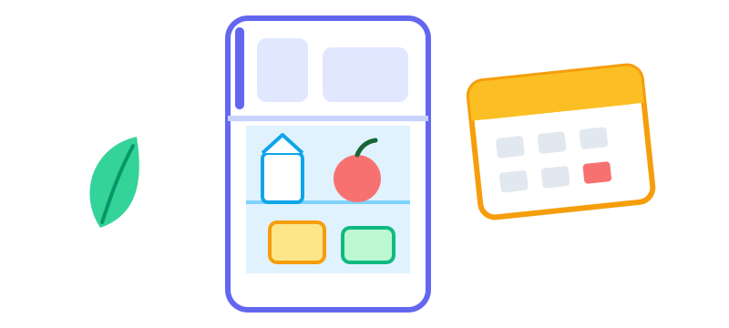
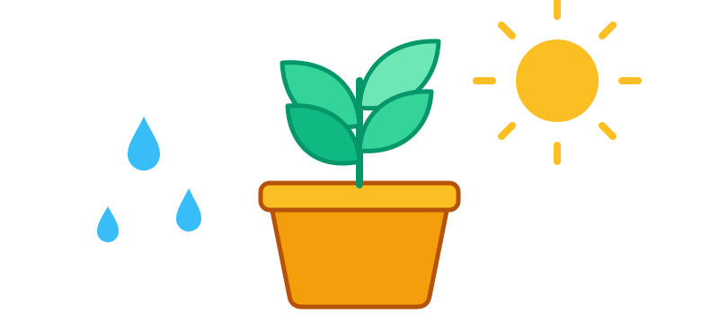

Use By dan Best Before: Cara Membaca Tanggal pada Makanan

Cukup banyak makanan yang dibuang gara-gara tanggal di kemasannya. Sebagian masih layak, sebagian lagi seharusnya sudah dimakan beberapa hari sebelumnya. Bedanya ada pada pemahaman tentang apa yang sebenarnya dikatakan label itu.
"Use by" soal keamanan
Tanggal use by tertera pada makanan yang cepat rusak dan bisa membuatmu sakit, seperti daging segar, ikan, makanan siap saji, dan sebagian produk susu. Anggap itu batas mutlak. Jangan makan setelah tanggal tersebut, meski tampak dan tercium normal, karena bakteri penyebab sakit tidak selalu mengubah bau makanan.
"Best before" soal kualitas
Tanggal best before tertera pada makanan yang lebih tahan lama seperti pasta, beras, biskuit, makanan kaleng, dan banyak saus. Setelah tanggal itu, rasa atau teksturnya mungkin menurun, tetapi biasanya masih aman kalau kemasan utuh dan disimpan dengan benar. Lihat, cium, dan cicipi sedikit sebelum memutuskan. Jangan makan makanan dari kaleng yang menggembung atau penyok parah.
Label berubah setelah dibuka
Tanggal di label berlaku untuk kemasan yang belum dibuka. Setelah dibuka, banyak produk punya masa simpan lebih pendek, dan labelnya sering menyebutkannya, misalnya "habiskan dalam 3 hari setelah dibuka". Tulis tanggal pembukaan di kemasan dengan spidol supaya tidak perlu mengingat-ingat.
Pengaturan kulkas dan freezer
- Jaga kulkas di 4°C atau lebih rendah. Termometer kulkas yang murah pun berguna, karena angka di tombol pengatur sering tidak akurat.
- Jaga freezer di −18°C. Makanan tetap aman pada suhu itu, walau kualitasnya perlahan turun selama berbulan-bulan.
- Jangan memenuhi kulkas. Udara dingin butuh ruang untuk bersirkulasi.
- Biarkan makanan panas agak dingin, lalu simpan di kulkas dalam waktu dua jam.
Berapa lama sisa makanan bertahan?
Pedoman umum: habiskan sisa makanan matang dalam tiga sampai empat hari kalau disimpan di kulkas. Panaskan sampai benar-benar mengepul sampai ke dalam. Nasi perlu perhatian khusus: dinginkan dengan cepat, masukkan kulkas tidak lama setelah dimasak, dan habiskan dalam sehari, karena ada bakteri yang tahan panas dan bisa berkembang biak pada nasi yang dibiarkan di suhu ruang.
Gunakan freezer sebagai tombol jeda
Roti, makanan matang, rempah cincang, dan daging semuanya bagus dibekukan. Bekukan makanan sebelum tanggal use by, bukan di hari terakhir, dan beri label isi serta tanggalnya. Cairkan di kulkas semalaman, jangan di meja dapur.
Kebiasaan yang mengurangi sampah makanan
- Yang masuk lebih dulu, keluar lebih dulu. Taruh barang baru di belakang dan yang lama di depan.
- Sediakan rak "habiskan dulu" untuk makanan yang mendekati tanggalnya.
- Cek sebelum belanja. Lihat isi kulkas dan lemari sebelum membuat daftar belanja.
- Rencanakan dua atau tiga menu dari bahan yang perlu segera dihabiskan.
- Beli lebih sedikit untuk bahan segar yang tidak cepat terpakai.
Semua ini tidak perlu rumit. Kalau hanya satu aturan yang ingin diingat, pegang ini: tanggal use by adalah batas keamanan, sedangkan tanggal best before adalah panduan kualitas.
Panduan lainnya

Seberapa Sering Tanaman Hias Harus Disiram?
Kenapa jadwal siram yang kaku sering gagal, cara memeriksa apakah tanaman haus, dan tanda-tanda kelebihan atau kekurangan air.

Cara Menemukan dan Membatalkan Langganan yang Terlupakan
Langkah demi langkah mencari tagihan berulang di rekening, kartu, dan toko aplikasi, memutuskan mana yang dipertahankan, dan menghentikan perpanjangan yang tidak disadari.

Printer Thermal untuk Struk dan Label: Panduan Praktis
Cara kerja cetak thermal, kertas 58 mm dan 80 mm, Bluetooth atau USB, dan solusi untuk hasil cetak pudar, kacau, atau tidak keluar.